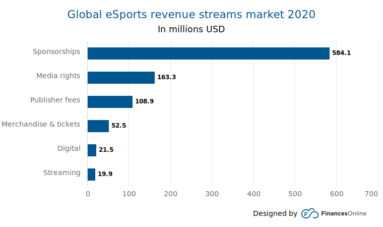
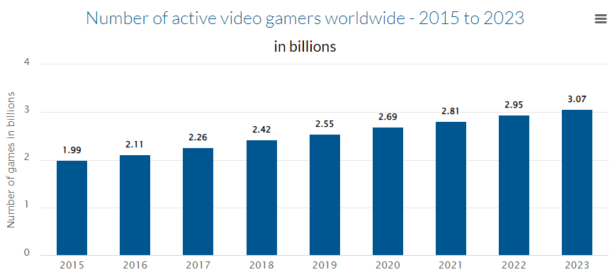
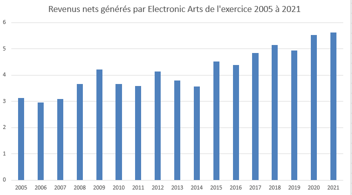

C’est quoi le eSport
eSports décrit le monde du jeu vidéo compétitif et organisé. Des concurrents de différentes ligues ou équipes s'affrontent dans les mêmes jeux qui sont populaires auprès des joueurs à domicile : Fortnite, League of Legends, Counter-Strike, Call of Duty, Overwatch et Madden NFL, pour n'en nommer que quelques-uns. Ces joueurs sont regardés et suivis par des millions de fans du monde entier, qui assistent à des événements en direct ou se connectent à la télévision ou en ligne. Les services de streaming comme Twitch permettent aux téléspectateurs de regarder leurs joueurs préférés jouer en temps réel, et c'est généralement là que les joueurs populaires construisent leurs fandoms.
Effet des jeux video
STATISTIQUES
Le chiffre d'affaires global du marché mondial de l'eSport en 2020 est de 950,3 millions de dollars, avec une audience mondiale totale de 495 millions en 2020. L'eSport a été reconnu comme une activité sportive potentielle par le Comité international olympique en 2017. Il a fait ses débuts historiques en tant que sport médaillé en les 30e Jeux d'Asie du Sud-Est. Bien que ne faisant pas partie des jeux olympiques, l'exposition orientera les discussions sur la validité de l'esport en tant que sport de compétition. Ce segment de jeu en croissance rapide devrait atteindre environ 1,6 milliard de dollars d'ici 2020.
Les joueurs ne sont pas la minorité comme la télévision et le cinéma les décrivent. Newzoo rapporte qu'il y avait 2,69 milliards de joueurs dans le monde à la fin de 2020. La croissance a été stable avec une augmentation moyenne de 5,6% d'une année sur l'autre. Les chiffres de 2021 devraient atteindre 2,81 milliards de joueurs, ce qui rapportera au marché mondial des jeux environ 189,3 milliards de dollars.
Le géant du jeu vidéo Electronic Arts a généré un chiffre d'affaires net de 5,63 milliards de dollars américains au cours de son exercice 2021. Cela marque une légère augmentation par rapport aux revenus de l'année précédente et dépeint toujours une tendance globale positive étant donné que les revenus s'élevaient à moins de 4,4 milliards de dollars américains en 2016.
VISION
Les perspectives de ce domaine se reflètent en plusieurs points